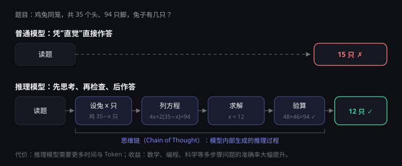
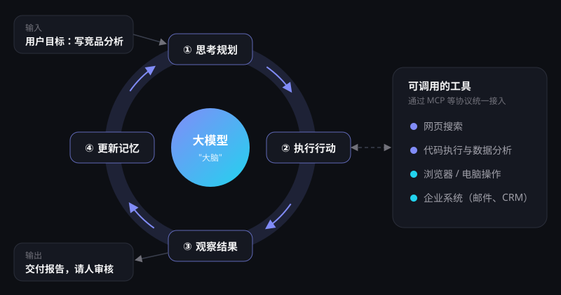
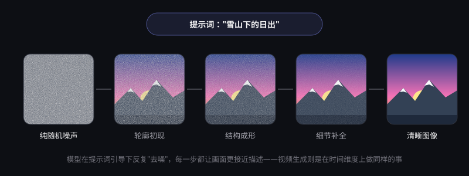
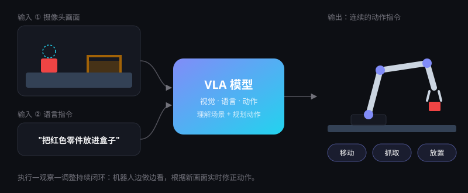

前沿技术详解
今天的 AI 系统由多层技术堆叠而成。先看懂整体"技术栈"，再逐一拆解当下最重要的六个方向：它们是什么、进展到哪、能做什么、还差什么。
AI 技术栈：从芯片到应用
每一层的进步都会传导到上层。理解这张分层图，就能看懂大部分 AI 新闻在讲哪一层。
六大前沿方向
每个方向都按"原理—最新进展—典型应用—当前局限"四个维度展开。
推理模型
传统大模型"脱口而出"，推理模型则会先在内部生成较长的思考过程，检查、回溯、再给出答案。

原理
在可自动判分的任务（数学、代码）上用强化学习训练模型的思维链，并在推理时投入更多计算（测试时计算）。
最新进展
2025 年开源推理模型大幅降低了成本门槛，顶尖模型在国际数学奥林匹克达到金牌水平；2026 年 9—10 月发布的新一代旗舰模型普遍把"深度思考"作为默认能力。
典型应用
复杂编程、数学证明、科研分析、多步骤规划、法律与财务的严谨推导。
当前局限
响应更慢、成本更高；在常识性小任务上仍可能出错，"想得多"不等于"想得对"。
AI 智能体（Agent）
智能体 = 大模型 + 工具 + 记忆 + 规划。它不只回答问题，而是能自主拆解目标、调用工具并检查结果，直到任务完成。

原理
模型在"思考—行动—观察"的循环中工作：决定调用哪个工具（搜索、代码执行、浏览器、企业系统），读取结果后继续下一步。
最新进展
MCP 等开放协议让智能体可以标准化地连接各类数据与软件；编程智能体已能独立修复真实代码仓库中的大部分问题；2026 年，可连续工作数小时乃至数天、跨办公软件执行任务的企业级智能体陆续推出。
典型应用
软件开发、数据分析、客服与工单处理、办公流程自动化、调研报告撰写。
当前局限
在结构化任务中仍约有三分之一失败；权限过大时可能产生意料之外的操作，需要人工审批与审计机制。
多模态生成
一个模型同时理解和生成文字、图像、语音与视频，AI 开始像人一样"看、听、说、画"。

原理
将不同模态编码到统一的表示空间；图像与视频生成多采用扩散模型或扩散与 Transformer 结合的架构。
最新进展
视频生成已能同步产出画面、对白与音效，时长与一致性显著提升；实时语音对话的延迟接近人类交谈。
典型应用
广告与短视频制作、游戏美术、教育课件、无障碍辅助（看图说话、实时字幕）。
当前局限
物理规律与细节一致性仍有瑕疵；深度伪造风险上升，需要配合内容标识与溯源技术。
开源大模型
开放模型权重，任何人都可以下载、部署、微调。开源正在成为与闭源并行的另一条主线。
原理
发布训练好的模型参数（"开放权重"），常配合混合专家架构、知识蒸馏等技术降低部署成本。
最新进展
DeepSeek V4（2026 年 4 月）等中国开源模型位居全球前列。据第三方平台 OpenRouter 统计，2026 年 10 月中旬全球周调用量前五名均为中国模型。
典型应用
企业私有化部署、数据不出域的政务与金融场景、端侧设备、学术研究。
当前局限
部署和运维需要专业团队；开放权重也意味着安全护栏更容易被移除，需要平衡开放与风险。
具身智能
让 AI 拥有"身体"，在物理世界中感知、决策与行动。人形机器人是最受关注的载体。

原理
视觉-语言-动作（VLA）模型把摄像头画面和自然语言指令直接映射为机械臂、关节的动作；世界模型与仿真训练弥补真实数据不足。
最新进展
2026 年上半年全球人形机器人出货超 2.2 万台、同比增长近 3 倍，全年预计超过 5 万台；我国上半年推出的人形机器人整机产品超过 400 款，全年产量有望突破 10 万台。
典型应用
工厂柔性产线、仓储物流、巡检、商业服务，以及长期来看的家庭服务与养老陪护。
当前局限
可靠性、续航与成本仍是瓶颈，复杂非结构化环境中的泛化能力有限，规模化商用仍需时间。
AI for Science
用 AI 加速科学发现本身。从预测蛋白质结构到筛选新材料，AI 正在改变科研范式。
原理
在科学数据上训练专用模型，学习分子、材料、天气等复杂系统的规律，替代或加速昂贵的实验与数值模拟。
最新进展
蛋白质结构预测获 2024 年诺贝尔化学奖；AI 天气预报在多项指标上超越传统数值模式；"AI 科学家"开始参与提出假设与设计实验。
典型应用
药物研发、新材料与电池设计、气象预报、核聚变控制、基因组学。
当前局限
高质量科学数据稀缺，模型结论仍需实验验证，可解释性不足。